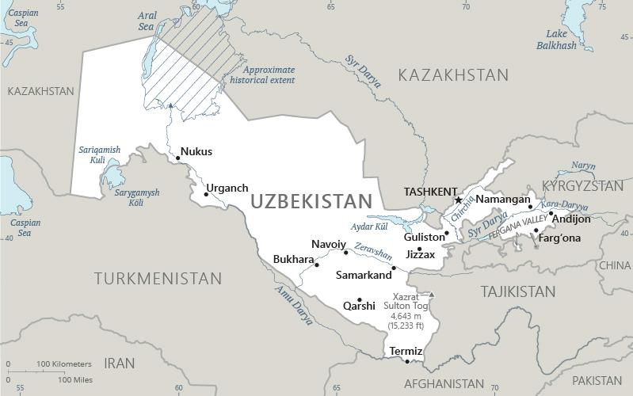

Genel Bilgiler
Özbekistan, Orta Asya’da yer alan üniter bir cumhuriyettir. Başkenti Taşkent’tir. Yaklaşık 36,5 milyon nüfusa sahiptir. Resmî dili Özbekçe’dir ve para birimi Özbekistan Somu (UZS)’dur. Özbekistan, tarihi İpek Yolu güzergâhında bulunması ve zengin kültürel mirası ile bilinir.
Özbekistan, kuzeyde Kazakistan, doğuda Kazakistan ve Kırgızistan, güneyde Tacikistan ve Afganistan, batıda Türkmenistan ile çevrilidir. Yüzölçümü yaklaşık 447.400 km²’dir. Ülke çoğunlukla bozkır ve çöl alanlarından oluşur; önemli nehirleri Amu Derya ve Sir Derya’dır.
Başkent: Taşkent
Kıta: Asya
Yüzölçümü: 448.978 km²
Nüfus (2025): 35.000.000
Bayrak Anlamı: Özbekistan bayrağı yatay mavi, beyaz ve yeşil şeritlerden oluşur; beyaz şeridin üzerinde kırmızı bir ince çizgi ve sol üst köşede ay ve 12 yıldız bulunur. Mavi gökyüzünü, beyaz barışı ve saflığı, yeşil doğayı ve verimliliği, kırmızı çizgi ise cesareti temsil eder. Ay ve yıldızlar tarih ve kültürel mirası simgeler. Bayrak 1991 yılında kabul edilmiştir.
Özbekistan Haritası
Ekonomi
Özbekistan ekonomisi tarım, sanayi ve hizmet sektörlerine dayanır. Tarımda pamuk, buğday ve meyve üretimi öne çıkar. Sanayi sektöründe tekstil, gıda işleme ve maden işleme yaygındır. Hizmet sektörü özellikle ticaret ve finans alanlarında gelişmektedir. Ülke doğal kaynaklar açısından zengindir ve enerji, altın ve doğal gaz ihracatı ekonomide önemli yer tutar.
| Yıl | İhracat (Milyar $) | İthalat (Milyar $) |
|---|---|---|
| 2019 | 25 | 34 |
| 2020 | 22 | 30 |
| 2021 | 28 | 36 |
| 2022 | 32 | 40 |
| 2023 | 35 | 42 |